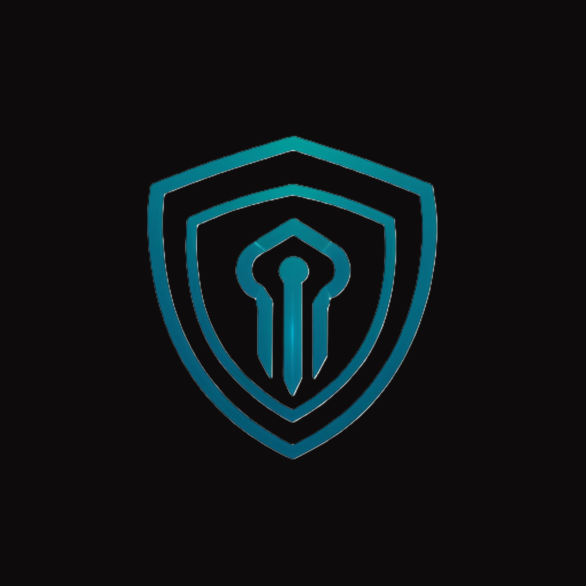
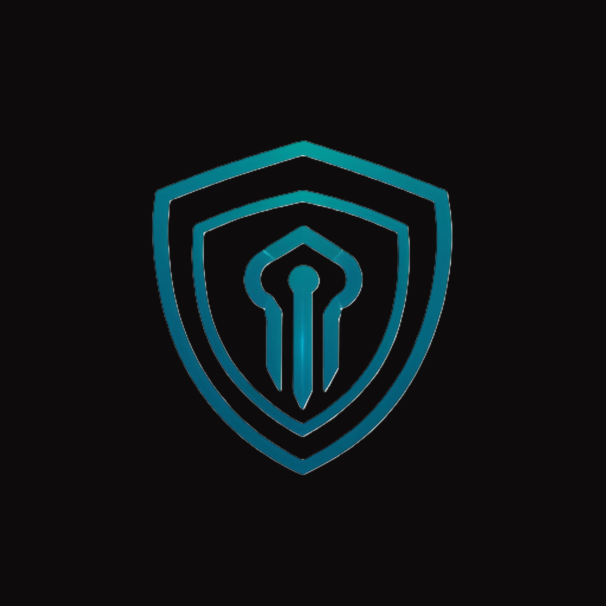

Gestión de Incidentes y Respuesta Rápida
Descubre la importancia de una respuesta rápida ante incidentes de ciberseguridad. Conoce las mejores prácticas para gestionar crisis y minimizar el impacto de las brechas de seguridad en tu organización. Prepárate para enfrentar desafíos y proteger tus activos digitales.
Ethical Hacking: La Defensa desde Adentro
Explora el mundo del ethical hacking y cómo los profesionales de seguridad utilizan técnicas avanzadas para identificar vulnerabilidades antes que los ciberdelincuentes. Aprende cómo el hacking ético puede fortalecer la seguridad cibernética de tu organización.
Gestión de Incidentes y Respuesta Rápida
Descubre la importancia de una respuesta rápida ante incidentes de ciberseguridad. Conoce las mejores prácticas para gestionar crisis y minimizar el impacto de las brechas de seguridad en tu organización. Prepárate para enfrentar desafíos y proteger tus activos digitales.
Tendencias Emergentes en Ciberseguridad
Analiza las últimas tendencias y desarrollos en el campo de la ciberseguridad. Desde el uso de inteligencia artificial hasta la protección de la nube, explora cómo las tecnologías emergentes están transformando el panorama de la seguridad cibernética y qué significa para tu negocio.
 
